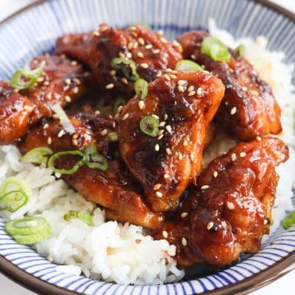

Teriyaki Chicken

Delicious, savory teriyaki chicken served over a bed of rice and topped with scallions.
Teriyaki (照り焼き) commonly refers to a style of cooking, but it also refers to the name of a cooked dish or the sauce that is used to brush over the food.
To help you understand better: teri (照り) means “luster,” given by the sweet soy sauce marinade, while yaki (焼き) has a broader definition which can denote “cook or pan-fry or grill.” When translated literally, the dish means “shiny or glossy grilled chicken,” as it describes the lustrous glaze on the chicken created by the teriyaki sauce.
Ingredients
- Boneless, skin on chicken thighs
- Authentic Teriyaki Sauce
- Soy Sauce
- Sake
- Mirin
- Sugar
Cooking Instructions
- Prick the chicken: It’s important to prick the chicken’s skin with a fork to release the oil and absorb the flavors quickly when cooking. It is an extra step, but it ultimately makes a difference.
- Pan-fry the chicken: Japanese home cooks prepare this dish by pan-frying the chicken. It’s quick and easy, and you only need a reliable frying pan or large skillet. Make sure the pan is hot before you add the chicken. When you cook the chicken, remember to start with the skin-side down and let it sear undisturbed until the skin crisps up and nicely browned.
- Patiently spoon over the teriyaki sauce: Once the teriyaki sauce is poured over the chicken, tilt the frying pan to spoon the sauce and pour it over the chicken. Repeat this process until the chicken absorbs the delicious glaze and starts to shine.